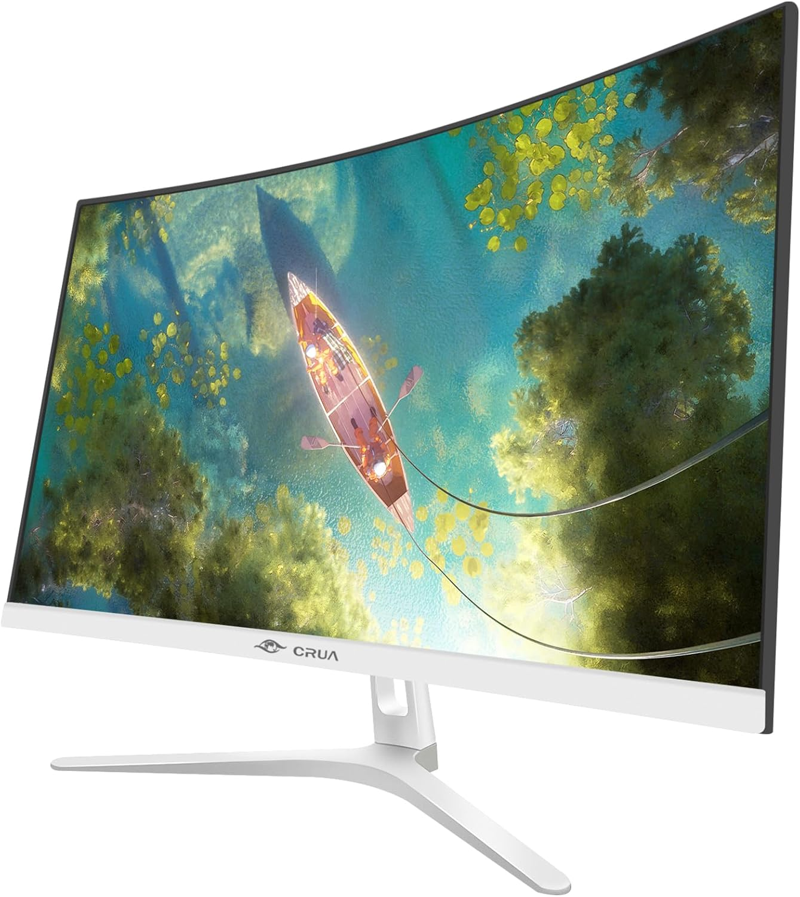
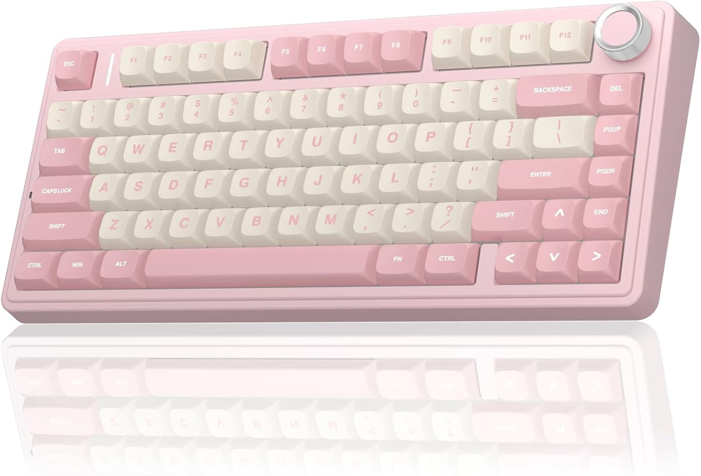
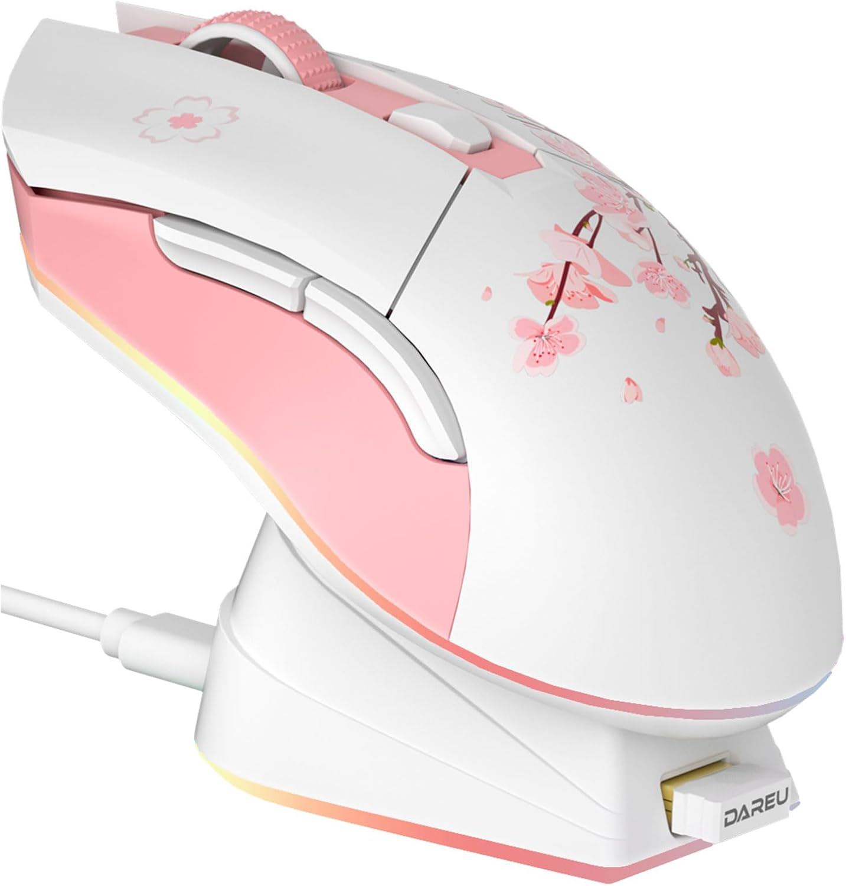
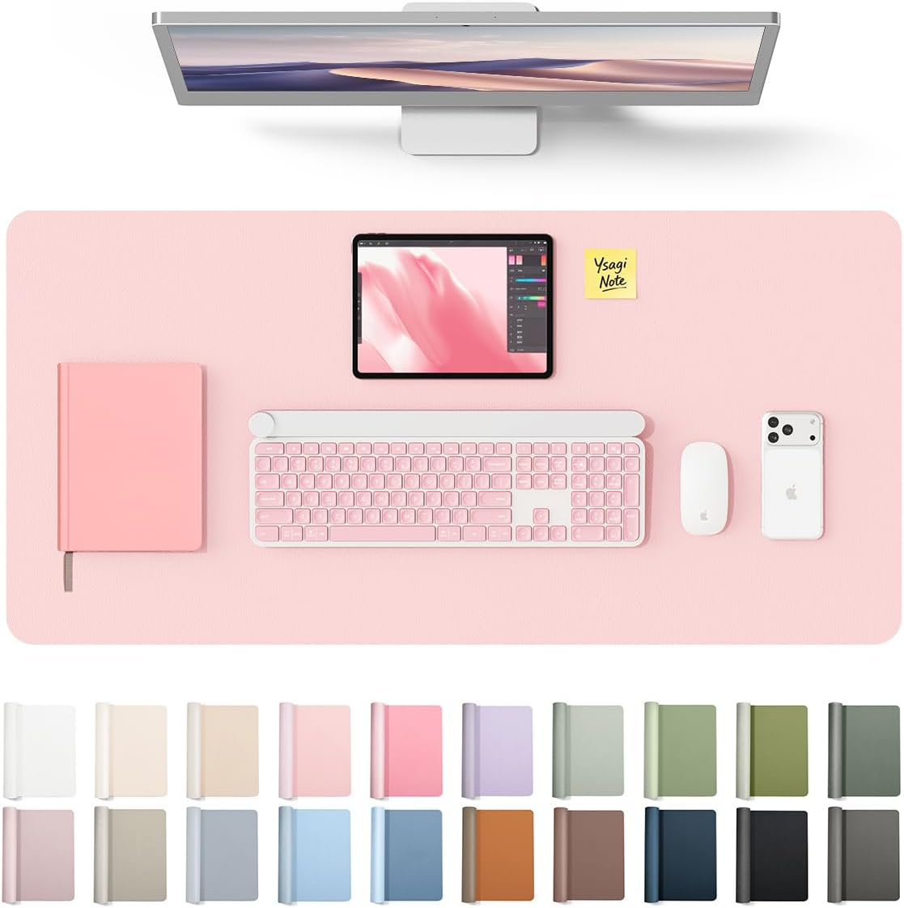
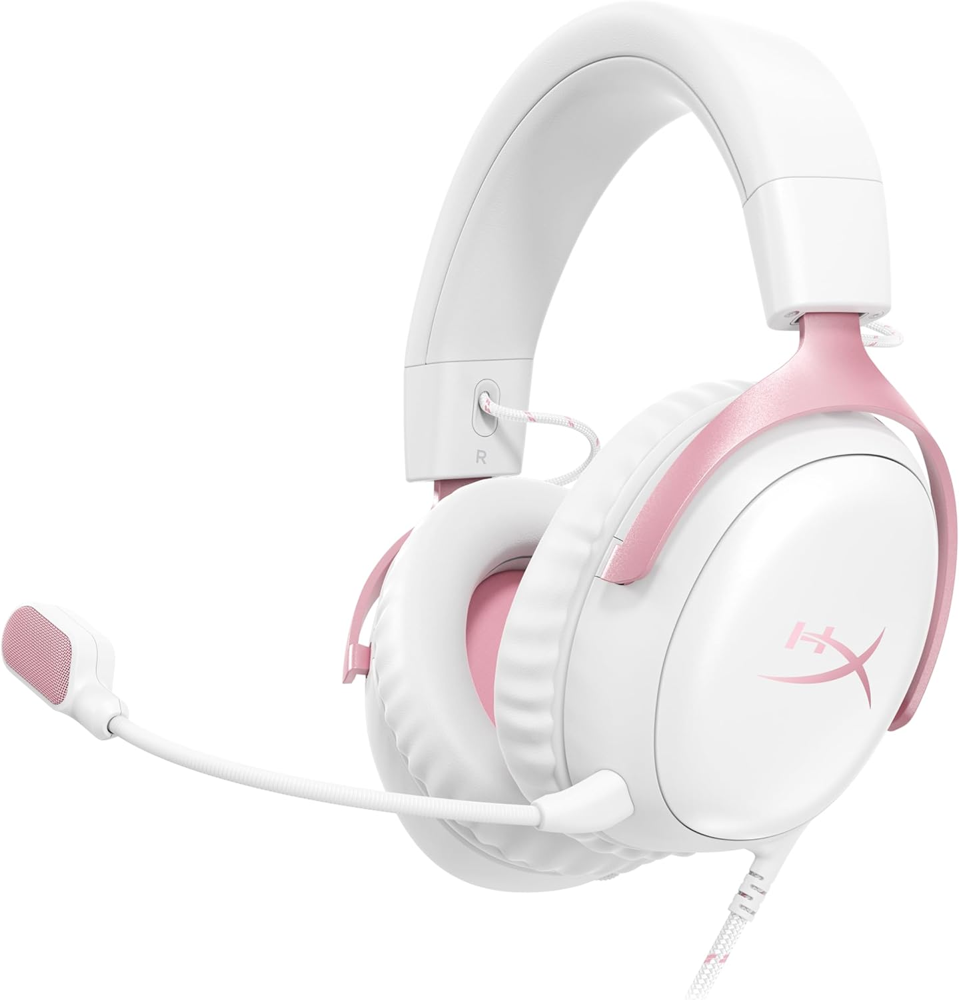
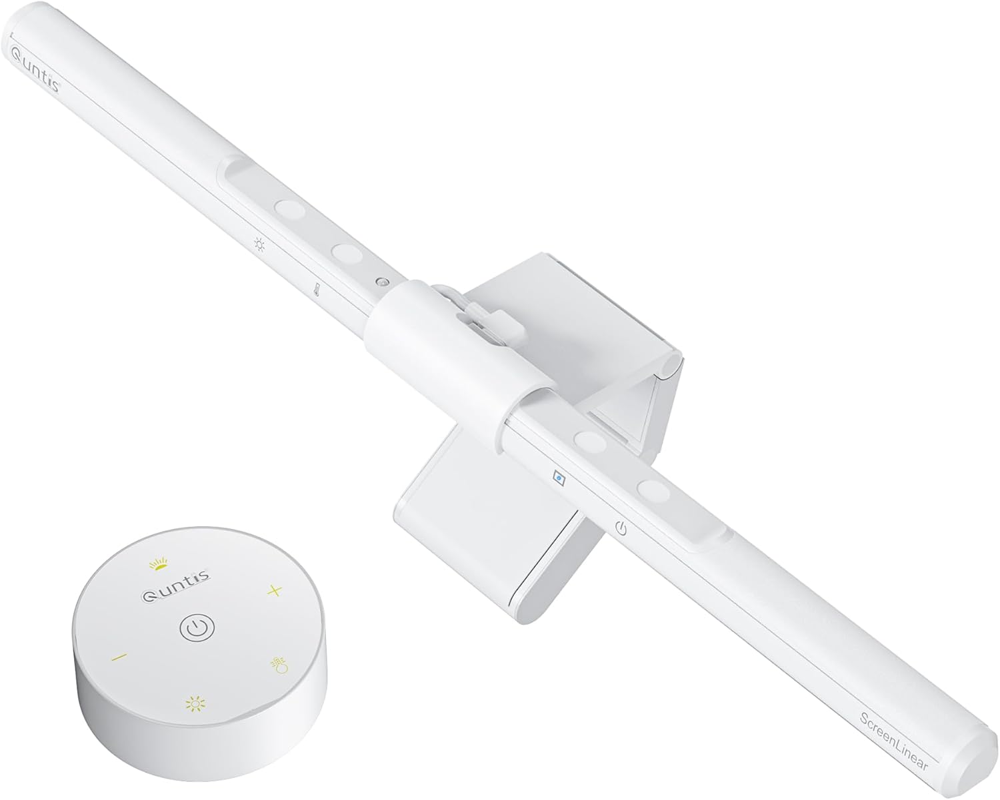
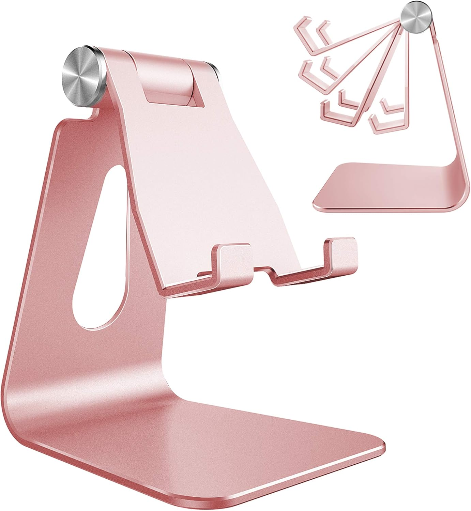
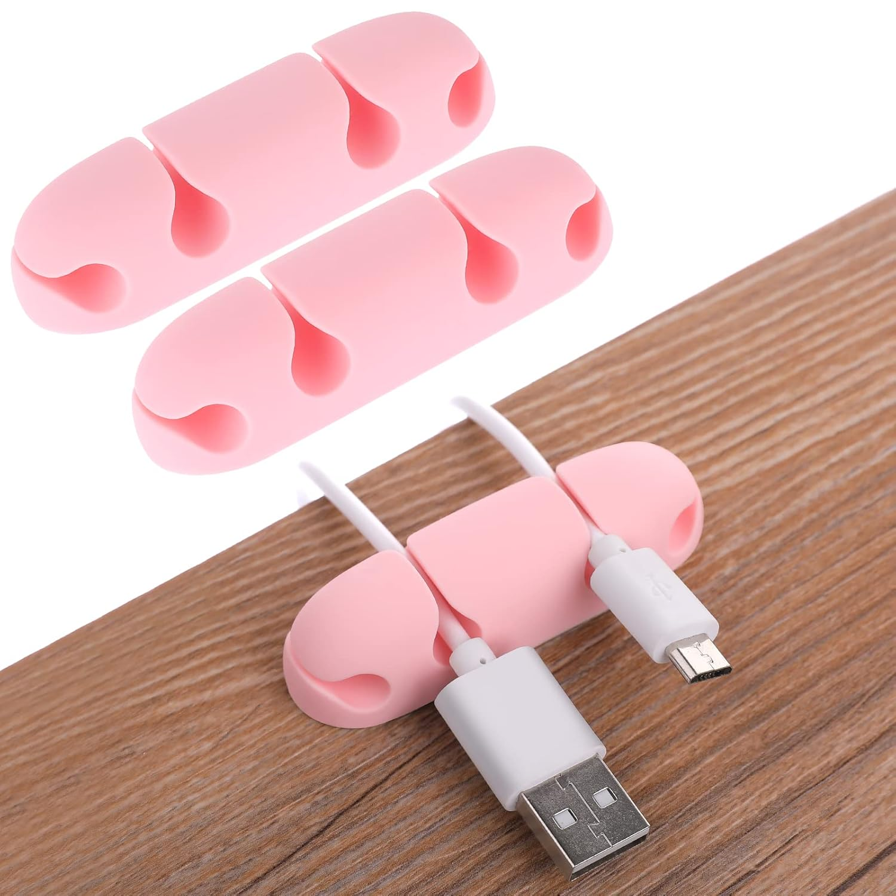

My ultimate pink cozy gaming setup
The full pink aesthetic desk — every piece you see in the pin, linked directly on Amazon. Nine products, one cohesive look.
Updated June 2026 · 9 pieces to shop

This is the pink cozy gaming setup I've been putting together piece by piece — and every single item is on Amazon. What I love about this build is how cohesive it feels: soft pinks, white accents, warm lighting, and that cute energy that looks straight off Pinterest. Whether you're building your dream gaming room from scratch or just upgrading a few key pieces, here's everything, linked.
Everything in this setup
- 01ChairGTPLAYER gaming chair — pink fabric
- 02DisplayCRUA 27" curved white monitor
- 03KeyboardAULA F75 wireless pink keyboard
- 04MouseDAREU Sakura pink wireless gaming mouse
- 05Desk matYSAGi light pink leather desk pad
- 06HeadsetHyperX Cloud III — pink
- 07LightingQuntis monitor light bar pro
- 08AccessoryRose gold adjustable phone stand
- 09AccessoryPink cable clips (3-pack)

GTPLAYER gaming chair — pink fabric
The centerpiece of the whole setup and the first thing your eyes go to in every photo. The GTPLAYER pink fabric chair hits the sweet spot between looking incredible and actually being comfortable for long sessions — lumbar support, headrest pillow, footrest, all in a soft pink-and-cream colorway that anchors the entire aesthetic.
Most pink gaming chairs look great in photos and feel terrible after an hour. This one has real padding, a footrest (rare at this price), and fabric instead of the cheap PU leather that cracks within a year.
Check price on Amazon ↗
CRUA 27" curved white monitor
A curved white monitor is the design choice that makes a pink gaming setup look intentional rather than thrown together. The CRUA 27" has a 1800R curve, full HD 1080p, 100Hz, 120% sRGB, and a three-sided frameless design. The white chassis against the pink accessories is exactly the contrast that makes setups look magazine-worthy.
Curved white monitors are hard to find at a reasonable price. This one looks genuinely white — not that off-white beige most monitors ship with — and the blue light filter makes late-night sessions much easier on the eyes.
Check price on Amazon ↗
AULA F75 75% wireless pink keyboard
The AULA F75 is the keyboard that started appearing everywhere in cozy gaming setups — and for good reason. 75% layout, creamy pink PBT keycaps, hot-swappable switches, triple connectivity (2.4GHz wireless, Bluetooth 5.0, USB-C), and pre-lubed linear switches that sound soft and feel smooth from the first keystroke.
Hot-swap support means you can change switches later without soldering. The 2.4GHz wireless means zero lag for gaming. At this price it punches well above its weight.
Check price on Amazon ↗
DAREU Sakura pink wireless gaming mouse
The DAREU Sakura is one of the most recognizable pieces in the pink gaming community — that sakura blossom design on a soft pink shell is immediately iconic. But it's not just pretty: 12K DPI, 6 programmable buttons, 300 IPS sensor, 1000Hz polling rate, RGB, and a charging dock included. Performance-wise it competes with mice that cost significantly more.
The charging dock is the detail that elevates this — it sits on your desk like a display piece. The sakura print is subtle in person, not garish. And the sensor genuinely handles fast gaming.
Check price on Amazon ↗
YSAGi light pink leather desk pad (31.5" × 15.8")
A full-width desk mat is the foundation that ties every piece of a setup together. This light pink PU leather pad covers the keyboard, mouse, and wrist rest in one unified surface. The leather texture looks sophisticated, it's waterproof, and the light pink complements the deeper pinks in the chair and mouse perfectly.
Go full-width or don't bother — a mouse-pad-sized mat makes expensive setups look budget. This one photographs beautifully and protects the desk from scratches and the inevitable coffee incident.
Check price on Amazon ↗
HyperX Cloud III gaming headset — pink
HyperX's Cloud III is one of the most well-regarded gaming headsets at any price — and the pink colorway makes it a statement piece. Angled 53mm drivers, memory foam ear cushions, ultra-clear 10mm mic, USB-C, USB-A, and 3.5mm connectivity across PC, PS5, and Xbox. When it's sitting on your desk it looks stunning; when it's on your head it disappears.
Most pink gaming headsets are budget hardware in a pink shell. The HyperX Cloud III is the real thing — premium audio, build quality that lasts, a mic that doesn't make you sound like you're inside a cardboard box.
Check price on Amazon ↗
Quntis monitor light bar pro — white
The monitor light bar is the single upgrade that makes a desk feel cozy rather than just functional. The Quntis Pro sits on top of your monitor, casts warm light down onto the desk without any glare on the screen, and has stepless dimming plus auto-brightness. The white finish matches the monitor, and the soft downward glow is exactly what creates that warm atmosphere in every viral setup photo.
Bias lighting reduces eye strain significantly during late-night sessions — it's not just for looks. The auto-dimming adjusts to your room so you don't have to think about it. Easiest comfort upgrade on this list.
Check price on Amazon ↗
Rose gold adjustable phone stand
In a pink setup a phone stand isn't just convenient — it's a design piece. This aluminum rose gold stand adjusts to any angle, fits every phone size, and the rose gold finish ties directly into the pink-and-white palette without competing with anything else on the desk.
Aluminum stands don't wobble or scratch your phone. This one folds flat, adjusts perfectly for face ID, and photographs beautifully — it's one of those accessories everyone who sees your setup will ask about.
Check price on Amazon ↗
Pink cable clips — 3-pack
Cable management is the invisible upgrade that separates a good-looking setup from a great-looking one. These 4-hole silicone clips in pink keep your cables organized and routed along the edge of your desk. Small, hold multiple cables at once, and in pink they actually add to the aesthetic.
Most people skip cable management and wonder why their setup doesn't look as clean as the ones they save on Pinterest. Five minutes with these clips transforms the back of your desk completely.
Check price on Amazon ↗